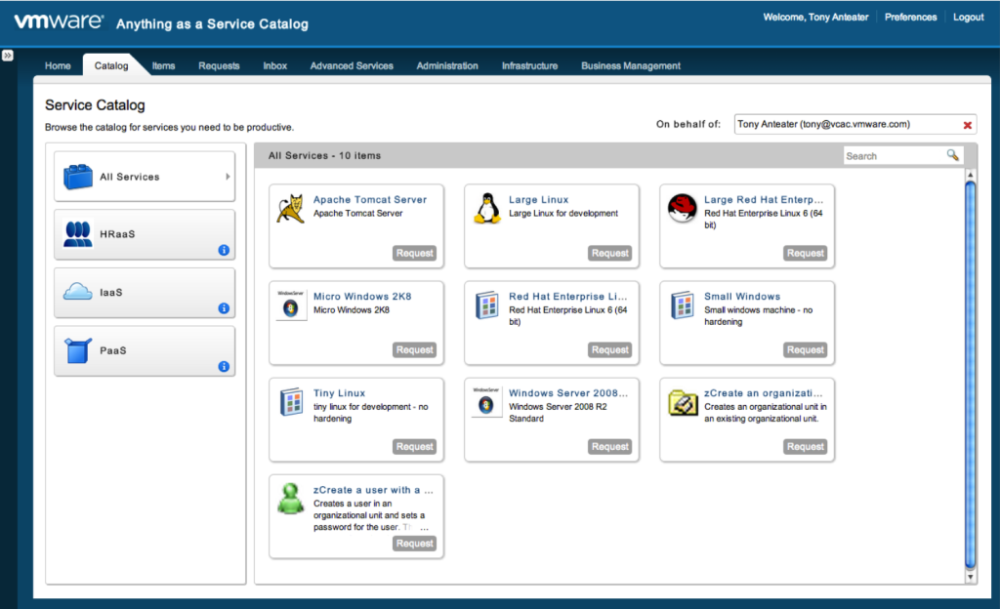
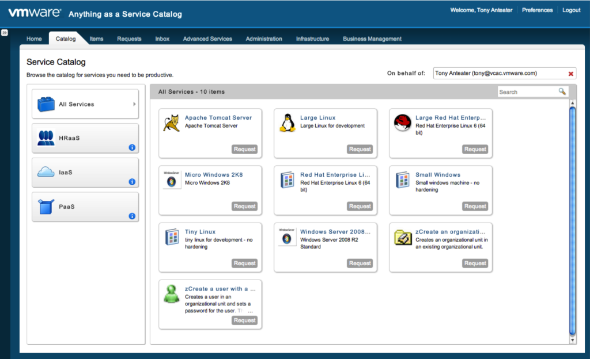

This version of CloudClient supports vRA 6.0 and 6.1 releases & can be used to created & manage both Catalog based entities  Catalog Service entities can be created and managed: Services Tenants Entitlements Email Servers CatalogItems Users and Groups Requests Approvals Infrastructure Service entities can be created and managed: Endpoints Fabric & Business groups Blueprints Machine Prefixes
This version of CloudClient supports vRA 6.0 and 6.1 releases & can be used to created & manage both Catalog based entities

Catalog Service entities can be created and managed:
Infrastructure Service entities can be created and managed: